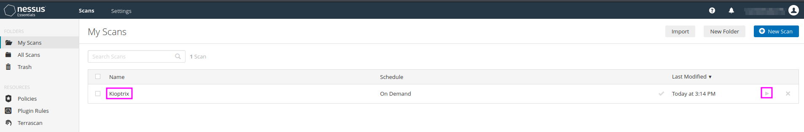
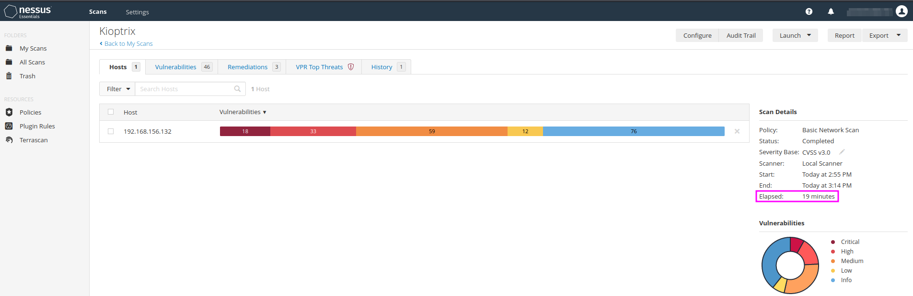
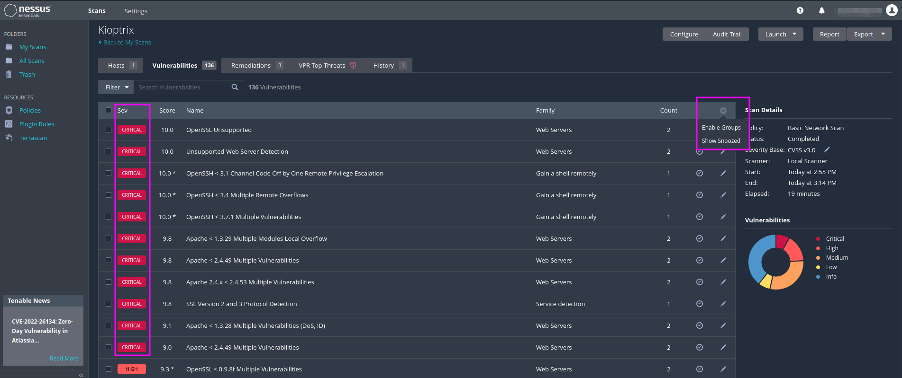

Scanning with Nessus
Nessus is a vulnerability scanner, a tool that is frequently used in penetration testing. It might even be the first tool that one uses in an external assessment.
Part 1
Once Nessus has been downloaded and installed (dpkg -i Nessus...deb, follow the instructions at the end, then chose the “Nessus Essentials”), we will typically use the Basic Network Scan and the Advanced Scan. The free edition can scan against any private IP address (up to max. 16 scans at a time, but no external scans).
We set the port scan range to all port under Discovery/Scan Type and the scan type to Scan for know web vulnerabilities. We leave everything as the default settings and save the settings, before we finally start the scan with the play button in the overview My Scans.
{kind=link}
The scan of the Kioptrix machine took approximately 20 minutes and delivered a good number of results, among them 2 critical ones, that we had gathered manually before using a couple of other tools.
{kind=link}
With the Advanced Scan one has in the first place more control over details that were predefined in the Basic Network Scan. TCM recommends to start with the Basic Scan on Kioptrix and then to play with the settings of the Advanced Scan to see what difference the individual settings bring about.
Part 2
To get the results displayed with more granularity we can click on the settings button in the upper right corner of the results table and click on Disable groups. Then we can sort the vulnerabilities by severity and pick the top few to put into our report (…, and use even the middle or low severity if there is nothing else to report to our client).
{kind=link}
We can see that Nessus has detected a lot of critically severe vulnerabilities, all related to OpenSSL, OpenSSH and the Apache server. Nessus does not only report the vulnerability and its severity, but it also includes suggestions for remedies that can be applied to fix the vulnerability. The report can be downloaded and converted into an Excel file that we can give to the client.
In any case, we should double-check the scan results, i.e. if Nessus reports to have found, e.g. Open SSL 0.9.6b, we must verify this manually with a direct connection to the service. We should not rely only on an automated scan, even though it is very helpful in making sure that we do not forget any potential vulnerabilities.
TCM reports that he pays for two tools for pentesting: Nessus and BurpSuite Pro.